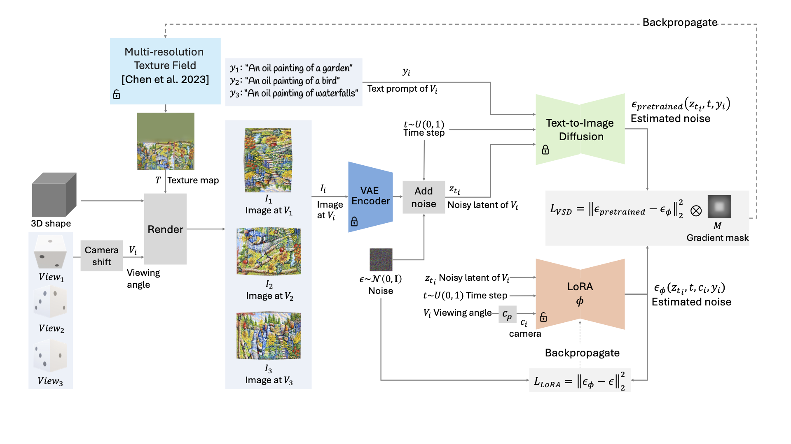

Automatically generating multiview illusions is a compelling challenge, where a single piece of visual content can present diverse interpretations from various perspectives. Existing methods like shadow art and wire art create interesting 3D illusions but are limited to simple images (i.e., figure-ground or line drawing), restricting their expressiveness in artistic and practical applications. Diffusion-based illusion generation methods can generate more intricate designs, while they still remain confined to 2D images. In this work, we present a novel approach for creating intricate 3D multiview illusions guided by user-provided text prompts. Our method leverages pre-trained diffusion models to optimize the textures of various 3D shapes through differentiable rendering, producing different interpretations when viewed from multiple angles. We introduce several techniques and design choices that improve the quality of the 3D multiview illusions. We demonstrate the effectiveness of our approach through various examples and 3D forms, showcasing its potential for different artistic expressions and practical applications.
Given multiple text prompts, we aim to create 3D illusions with multiple interpretations, each respecting the corresponding text prompt. We achieve this by selecting viewing angles of common 3D shapes or reflective surfaces with overlapping regions and optimizing them to align with the text descriptions. Our method leverages the power of diffusion models and incorporates several techniques and design choices to enhance the quality of these 3D multiview illusions.
